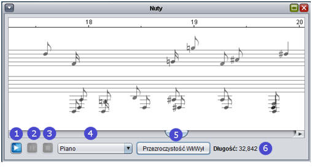

Aby utworzyæ nowy projekt, nale¿y pos³u¿yæ siê kreatorem projektu. Kreator projektu pozwala na szybkie rozpoznanie pliku d¼wiêkowego i zapisu go w formacie IMARE w pliku o rozszerzeniu apr. Kreator sk³ada siê z czterech prostych kroków:
W pierwszym kroku wybieramy plik d¼wiêkowy, który chcemy przetworzyæ. U¿ywamy do tego przycisku 5. Otworzy siê standardowe okno wyboru pliku, które pozwoli na otwarcie pliku z rozszerzeniem WAV lub MP3. Po za³adowaniu wybranego pliku pojawi siê on w oknie w postaci fali d¼wiêkowej, umo¿liwiaj±c jego odtworzenie.
Po ustawieniu wszystkich ¿±danych opcji przechodzimy do nastêpnego kroku, naciskaj±c przycisk Dalej, lub cofamy siê u¿ywaj±c do tego przycisku Wstecz lub ikony katalogu na dolnym pasku
Po przeprowadzeniu operacji rozpoznania d¼wiêku wy¶wietlone zostanie okno z nutami. Przyciskiem Zapisz mo¿emy zapisaæ nasze wyniki w postaci pliku projektu IMARE – apr.
Wy¶wietla siê standardowe okno zapisu pliku. Wpisujemy nazwê pliku i naciskamy przycisk Zapisz.
Projekt mo¿na otworzyæ na dwa sposoby:
Po otwarciu projektu otworz± siê okna z plikiem d¼wiêkowym przypisanym danemu projektowi oraz nuty, je¶li zosta³y one wygenerowane.
Aby zapisaæ projekt, wybieramy opcjê Zapisz z menu Plik lub klikamy na ikonê Zapisz w oknie g³ównym. Aby zapisaæ projekt pod inn± nazw±, wybieramy z menu Plik pozycjê Zapisz jako lub odpowiedni przycisk na pasku narzêdzi.
IMARE czyta dwa rodzaje plików audio: WAV oraz MP3. W celu otwarcia pliku audio nale¿y z menu Plik wybraæ pozycjê Otwórz plik audio. Pojawi siê standardowe okno otwarcia pliku. Po wybraniu jednego naciskamy przycisk Otwórz. Pojawi siê nastêpuj±ce okienko:
1: Rozpoczyna odtwarzanie pliku d¼wiêkowego.
2: Wstrzymuje
odtwarzanie.
3: Zatrzymuje odtwarzanie.
4: Rozpoczyna rozpoznawanie
d¼wiêku.
5: Pola wskazuj±ce pocz±tkow± i koñcow± pozycjê zaznaczenia w
sekundach.
6: Wy¶wietla okno rysuj±ce widmo zaznaczenia (patrz rozdzia³ Okno
widma).
7: Przybli¿enie/oddalenie. W przypadku, gdy zaznaczony jest fragment
¶cie¿ki d¼wiêkowej, przybli¿enie obejmuje ca³o¶æ zaznaczenia.
8: Regulacja
g³o¶no¶ci odtwarzania.
9: Skala czasowa pliku.
Po zaznaczeniu fragmentu ¶cie¿ki d¼wiêkowej i klikniêciu przycisku oznaczonego cyfr± 6 pojawi siê okno podobne do poni¿szego:
W oknie tym zostanie narysowane widmo zaznaczonego wcze¶niej fragmentu ¶cie¿ki d¼wiêkowej. Oto poszczególne elementy okna:
1: Rozmiar okna widma w ilo¶ci próbek – kolejne potêgi dwójki od 512 do
16384.
2: Wybór funkcji okna – Dirichlet, Blackman, Blackman-Nutall lub
Hamming.
3: Skala wykresu – liniowa lub logarytmiczna.
4: Informacje o
danym miejscu widma zaznaczone lini± 7.
5: Opis skali wykresu: o¶ OX –
kolejne czêstotliwo¶ci w hercach; o¶ OY – ró¿nice w natê¿eniu miêdzy dan±
czêstotliwo¶ci± a maksimum.
6: Pole wykresu. Najja¶niejsze pole oznacza
warto¶æ maksymaln± w tym miejscu, pole ciemniejsze oznacza ¶redni±, za¶
najciemniejsze – warto¶æ minimaln±.
7: Linia o pozycji ustalanej ruchem
myszy.
Ustawienia rozpoznawania mo¿na regulowaæ w dwóch miejscach: w drugim kroku kreatora projektu lub po otwarciu pliku d¼wiêkowego wybieraj±c pozycjê Rozpoznawanie z menu Narzêdzia. Pojawi siê okno podobne do poni¿szego:
Elementy tego okna przedstawiaj± siê nastêpuj±co:
1: Wybór funkcji okna spo¶ród czterech do wyboru: Dirichlet, Blackman,
Blackman Nutall lub Hamming.
2: Maksymalne przesuniêcie sk³adowych
harmonicznych w pó³tonach, przy którym dany pó³ton jest kontynuowany.
3:
Maksymalna przerwa w danym pó³tonie, przy której jest on traktowany jako ci±g³a
nuta.
4: Minimalna czêstotliwo¶æ brana pod uwagê przy rozpoznawaniu.
5:
Maksymalna czêstotliwo¶æ brana pod uwagê przy rozpoznawaniu.
6: Czêstotliwo¶æ
pobierania próbek z pliku d¼wiêkowego podczas rozpoznawania. Im ni¿sza warto¶æ,
tym dok³adniejsze rozpoznawanie.
7: Wielokrotno¶æ mediany si³y sygna³u, przy
której jest on brany pod uwagê przy rozpoznawaniu.
8: Minimalna d³ugo¶æ nuty,
przy której jest ona wyrzucana na piêcioliniê.
9: Zakres ró¿nicy g³o¶no¶ci
nut. Im wy¿sza warto¶æ, tym wyra¼niej zaznaczona dynamika.
10: Przywraca
domy¶lne ustawienia.
11: Rozpoczyna proces rozpoznawania utworu.
Po rozpoznaniu utworu otrzymujemy okno z zapisem nutowym podobne do poni¿szego:

1: Rozpocznij odtwarzanie nut.
2: Wstrzymaj
odtwarzanie.
3: Zatrzymaj odtwarzanie.
4: Wybór instrumentu MIDI, za
pomoc± którego rysowane s± nuty.
5: W³±cza lub wy³±cza przejrzysto¶æ nut w
zale¿no¶ci od ich g³o¶no¶ci.
6: Wy¶wietla d³ugo¶æ ¶cie¿ki d¼wiêkowej w
sekundach.
W³±czenie modu³u rozpoznawania w czasie rzeczywistym odbywa siê przez polecenie Rozpoznawanie w czasie rzeczywistym w menu Okna.
1: Rozpoczêcie nowego nagrywania.
2: Zatrzymanie nagrywania i skopiowanie
wynikowych nut na okno z notacj±.
3: Czas nagranych danych w sekundach.
4: Wynik transkrypcji strumienia audio na nuty.
5: Podgl±d widma aktualnie
rozpoznawanego strumienia. Im ja¶niejsza linia, tym wiêksza dynamika danego
d¼wiêku.
6: Rozpoczêcie odtwarzania nut.
7: Wstrzymanie odtwarzania nut.
8: Zatrzymanie odtwarzania nut.
9: Wybór instrumentu MIDI.
10:
W³±czenie lub wy³±czenie przejrzysto¶ci w zale¿no¶ci od dynamiki danej nuty.
Aby ustawiæ opcje programu, nale¿y z menu Narzêdzia wybraæ polecenie Opcje. Zapisywane s± natychmiastowo przy ich zmianie. Oto opis poszczególnych opcji:
IMARE pozwala na eksport otrzymanej notacji w trzech formatach: MIDI, PDF i LilyPond. Aby to uczyniæ, nale¿y wybraæ odpowiedni± opcjê z podmenu Eksport w menu Plik: